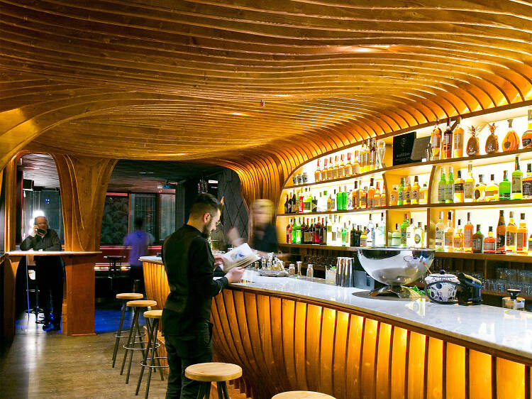
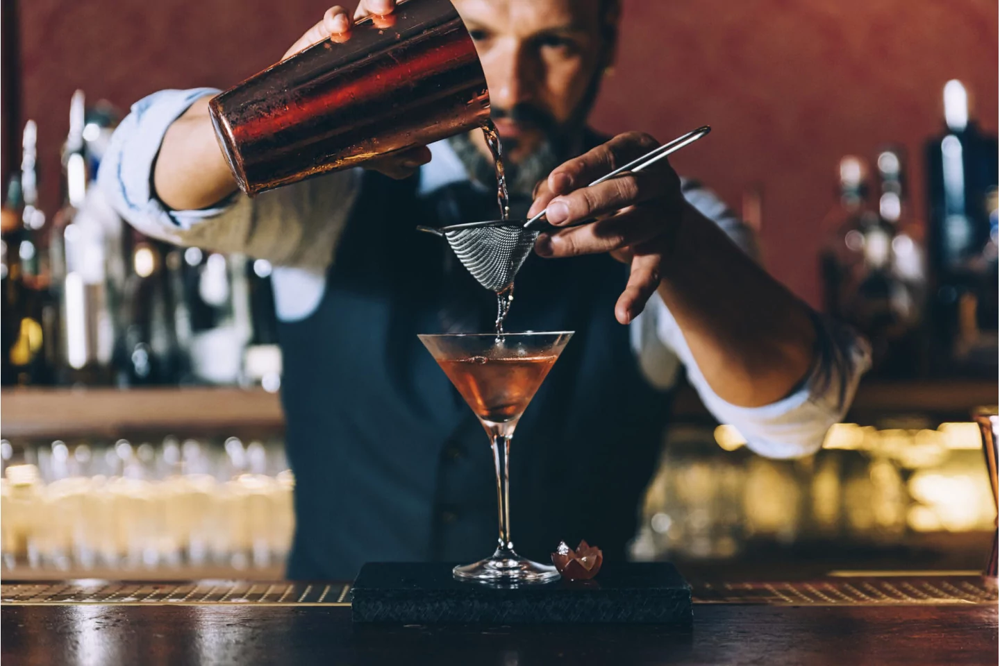
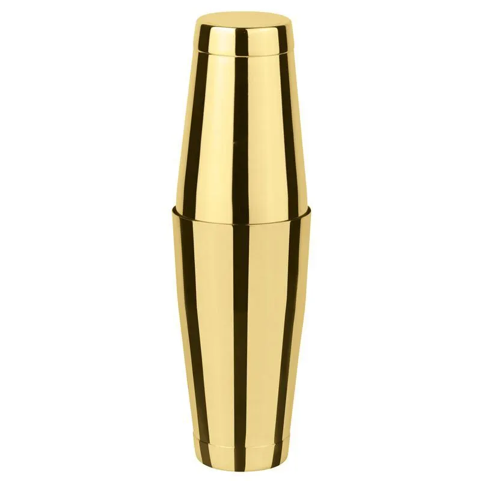
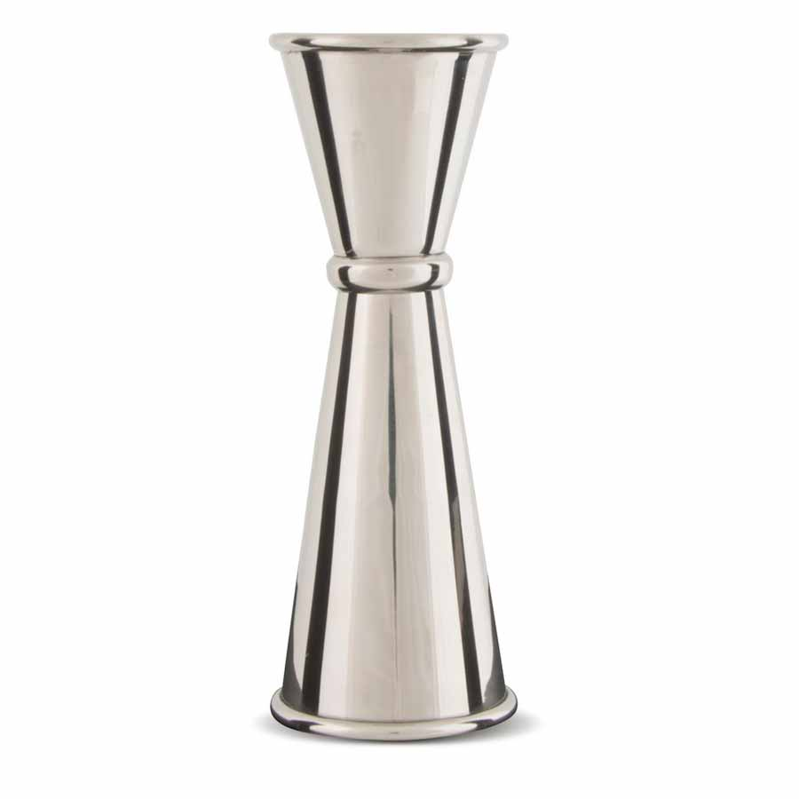
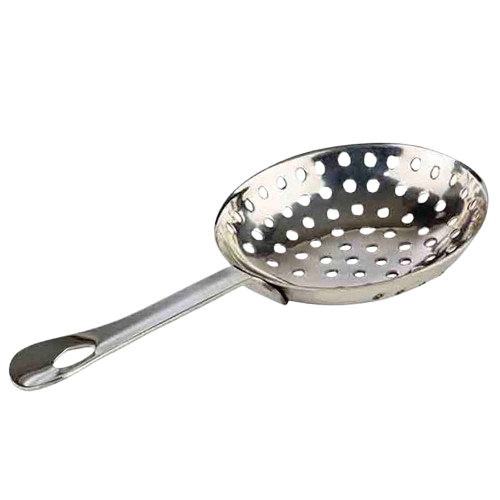
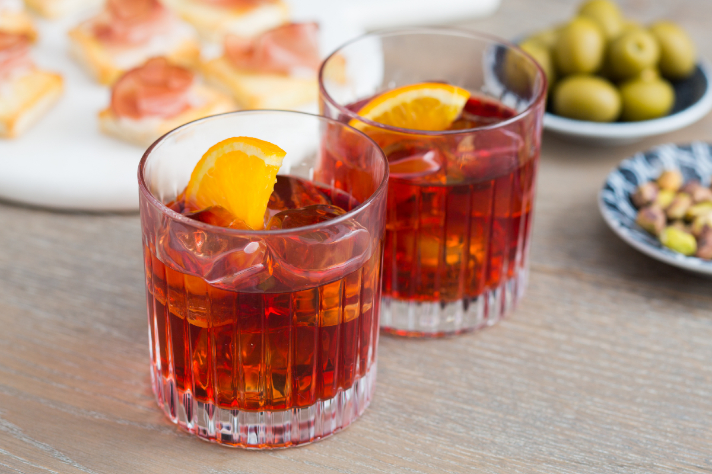
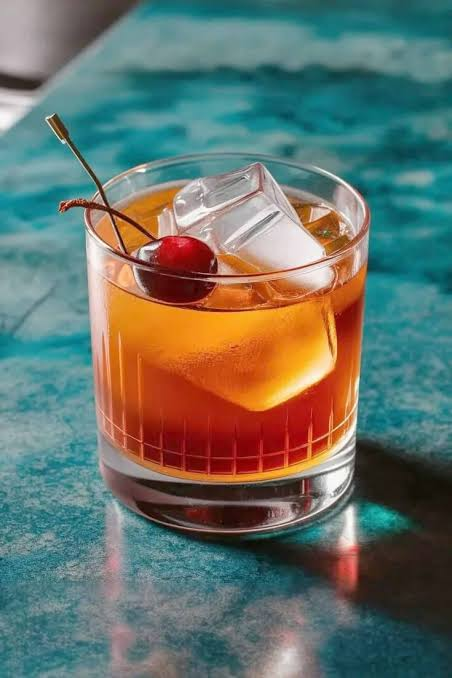
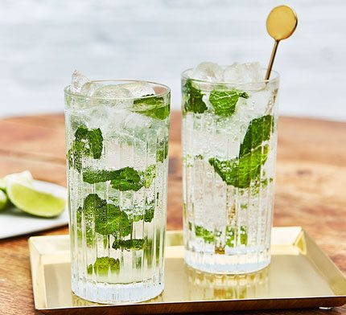
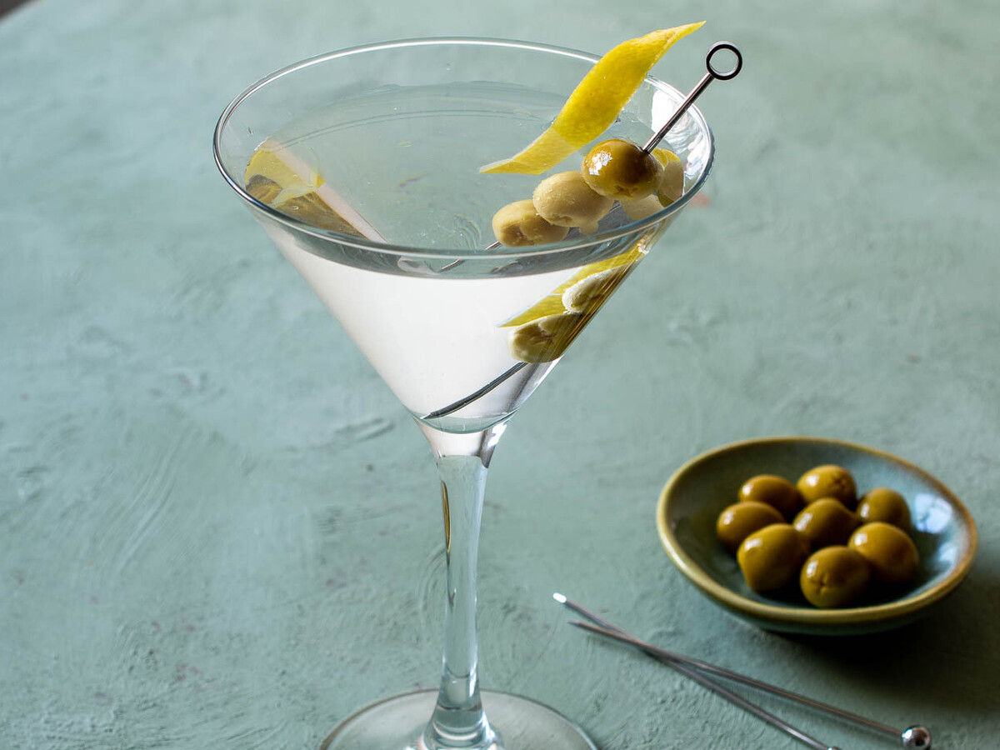
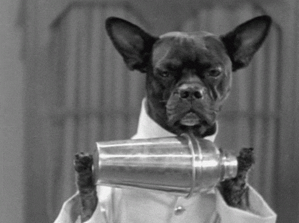

Colección de Imagenes
Barman, Herramientas de Cócteleria y Cócteles










Vídeo: Preparación de un Old Fashioned
Audio: Sonido de una coctelera en acción
Es solo el sonido de un hielo atrapado entre las paredes de una coctelera siendo golpeado contra las paredes de esta misma de manera violenta y siendo empujado contra su propia voluntad por un liquido extraño que desconoce.
Audio: Sonido del ambiente en un bar de cócteles
El sonido convencional de un bar de españa
Cinco variantes del famoso cocktail Negroni
Ver el video: Variantes del Negroni